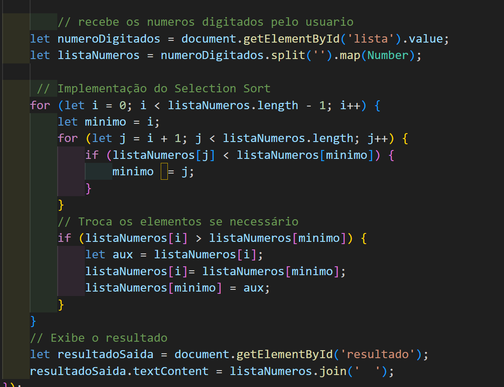

O Selection Sort é um algoritmo de ordenação que, apesar de ser fácil de entender e implementar, não é muito eficiente para grandes conjuntos de dados. Sua complexidade de tempo no pior caso, no caso médio e no melhor caso é O(n²).

Por que O(n²)? O Selection Sort utiliza dois laços for aninhados para percorrer o array. O laço externo itera sobre cada elemento, e o laço interno encontra o menor elemento restante.
Comparações em cada iteração: Em cada iteração do laço externo, o laço interno realiza aproximadamente n comparações, onde n é o tamanho do array.
A cada iteração do laço externo, é realizada no máximo uma troca. O que isso significa na prática?
Tempo de execução: O tempo de execução do Selection Sort cresce quadraticamente com o tamanho da entrada. Isso significa que dobrando o tamanho do array, o tempo de execução aumenta aproximadamente quatro vezes,para grandes conjuntos de dados, o Selection Sort se torna muito lento.
Quando usar o Selection Sort? para arrays muito pequenos, a diferença de desempenho entre o Selection Sort e outros algoritmos mais eficientes pode ser insignificante.
Simplicidade: O Selection Sort é fácil de entender e implementar, o que o torna uma boa opção para fins educacionais ou quando a simplicidade do código é mais importante do que a eficiência.
Existem algoritmos de ordenação mais eficientes? sim, existem diversos algoritmos de ordenação com melhor desempenho que o Selection Sort, como:
QuickSort: Tem uma complexidade média de O(n log n) e é um dos algoritmos de ordenação mais rápidos na prática.
MergeSort: Também tem uma complexidade de O(n log n) e é estável, ou seja, mantém a ordem relativa de elementos iguais.
HeapSort: Tem uma complexidade de O(n log n) e é um algoritmo in-place, ou seja, não utiliza memória extra.
Em resumo: o Selection Sort é um algoritmo de ordenação simples, mas não muito eficiente para grandes conjuntos de dados devido à sua complexidade de tempo quadrática. É importante conhecer outros algoritmos de ordenação e escolher o mais adequado para cada situação, levando em consideração o tamanho do conjunto de dados, a necessidade de estabilidade e outros fatores.